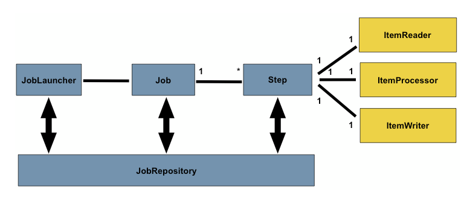

Procesamiento de datos con
SpringBatch
Qué es un Proceso Batch
Ejecucion sin la supervision del usuario
Ejecucion fuera del horario laboral
Procesan gran cantidad de datos
Son tareas repetitivas
Ej: procesamiento datos bancarios, facturas, imágenes
Caracteristicas proceso batch
- Workflow de tareas
- Gestión de Transacciones
- Tratamiento de Excepciones
- Hilos de ejecucion
- Bloqueos
1. Workflow de tareas
Lo primero es saber qué tareas va a realizar mi proceso.
Tareas secuenciales, en paralelo, repetitivas, dependientes de otras tareas ...
2. Gestion de Transacciones
Hay que pensar qué hacer ante un fallo y como gestionar las transacciones.
¿Qué cantidad de datos voy a tener que gestionar?
Ante un fallo, ¿hago rollback? ¿persisto los datos?
¿Hasta donde hago rollback?
3. Tratamiento de Excepciones
Caidas de conexión. ¿Reintento la conexión o finalizo el batch?
Ante un fallo de negocio, ¿termino la ejecución o continuo?
4. Hilos de ejecucion
¿Cuánto tiempo tengo para que mi proceso termine?
¿Tiene que terminar a una hora determinada?
¿Necesita el usuario los datos disponibles a primera hora de la mañana?
¿Son necesarios hilos?¿Tengo memoria suficiente en la máquina para soportar X hilos de ejecución?
5. Bloqueos
Pensar en la estrategia de bloqueos a utilizar si se producen
Patrón optimistic locking
Patrón pesismistic locking
SpringBatch
Framework opensource para la creacion de procesos batch
Escalable y facil de personalizar
Arquitectura
Job Repository
Almacena en tiempo de ejecución información sobre los jobs
Job Launcher
Responsable de ejecutar cada uno de los jobs
Job
Proceso de ejecución formado por uno o más steps
...
Step
Representación de un lote.
Un job está formado por N steps.
Steps especiales: Chunk Oriented
Tecnica de procesamiento orientada a "porciones"
El reader lee una porción de datos, el processor los procesa y en el writer se envian a BBDD
Cada porción o chunk se gestiona en transacciones independientes
ItemReader
Hay itemReaders definidos por Spring
- FlatFileItemReader: el recurso es un fichero
- ListItemReader: el recurso es una lista
- MongoItemReader: el recurso es una query en Mongo
Podemos definir nuestro propio Reader
ItemProcessor
No es obligatorio usarlo
Permite tratar los datos recibidos por el Reader
ItemWriter
Guarda la informacion leida por el Reader y tratada por el processor
* commit-interval: tamaño de la porción a tratar
Workflow de Steps
Ejemplo de step condicional
Gestion de fallos
Podemos configurar los steps y sus rollbacks
Si se produce una excepcion de tipo ValidationException, no se hará rollback
Gestion de transacciones
- PROPAGATION_REQUIRED:
soporte a la transaccion actual. Crea una nueva si no existe. - PROPAGATION_REQUIRES_NEW:
crea una nueva transaccion suspendiendo la anterior en caso de existir. - PROPAGATION_SUPPORTS:
soporte a la transaccion actual. Si no existe transaccion, no existe una nueva - ISOLATION_DEFAULT:
Utiliza la configuracion por defecto del datastore
Gestion de hilos
corePoolSize: Tamaño de hilos del proceso batch
Demo

Conclusiones
- Framework muy robusto para procesamiento batch
- Abstrae de muchas tareas complejas al desarrollador
- Muy escalable para adaptarlo a cualquier proceso
- No es facil detectar errores
- Comportamientos no deseables si no configuras bien